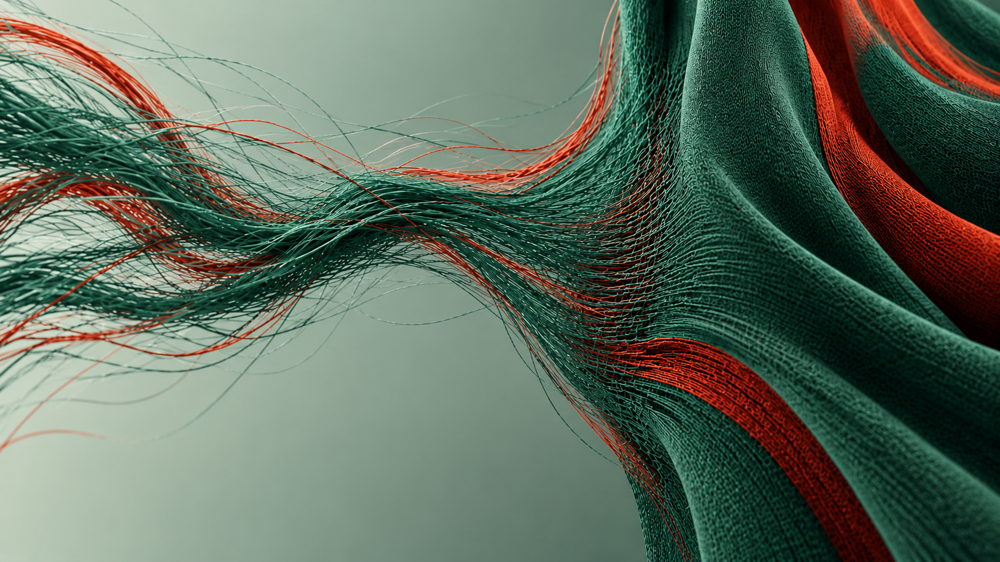
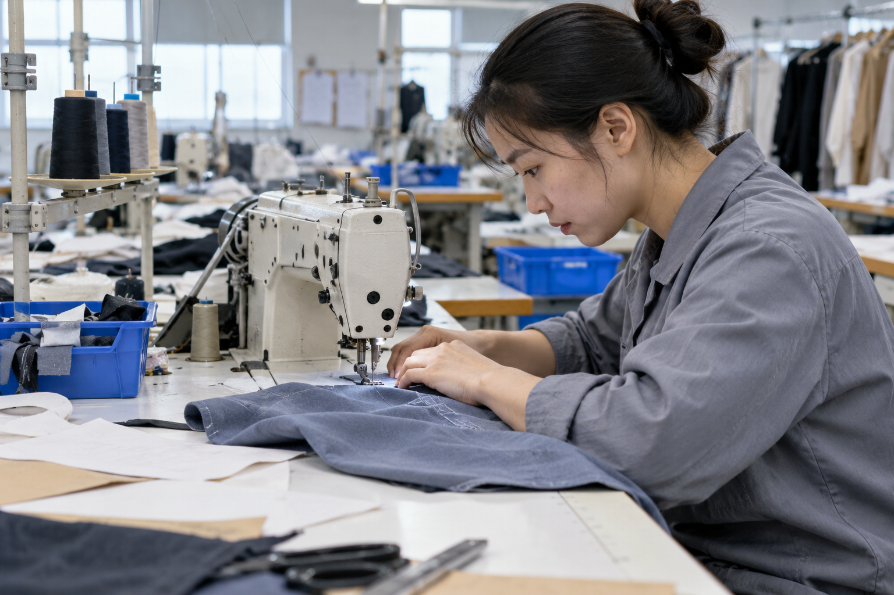
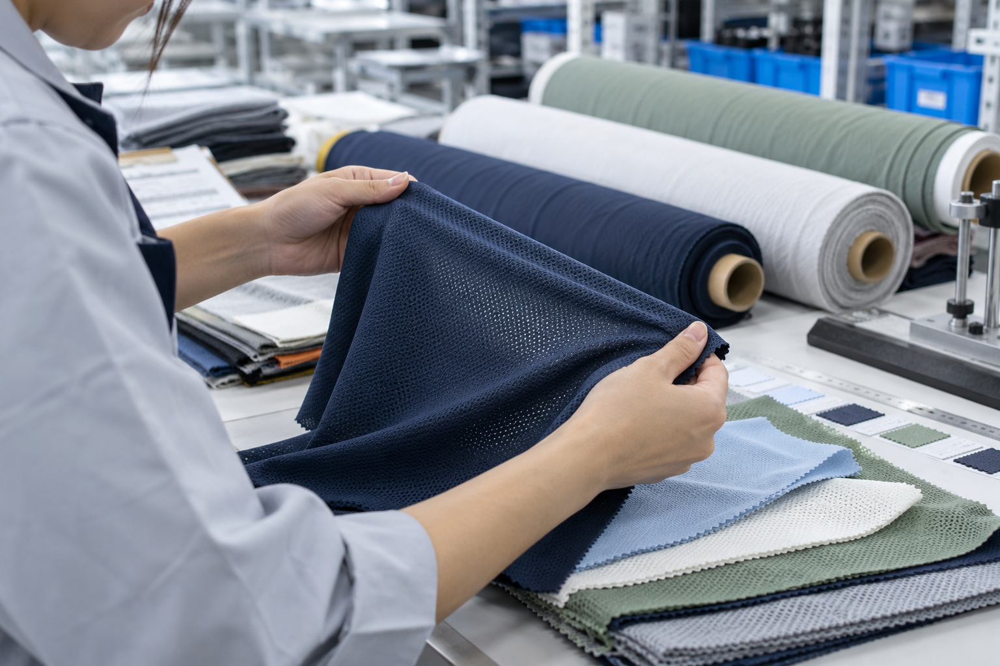
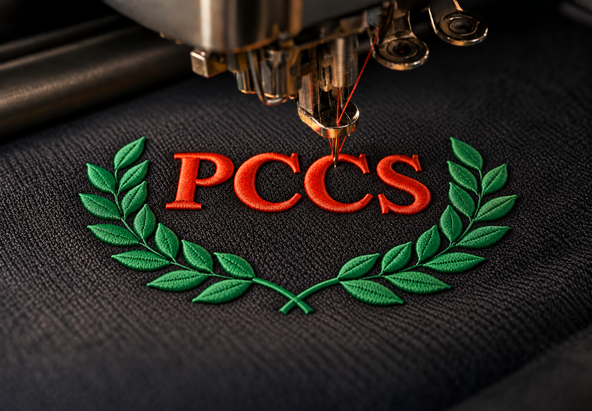
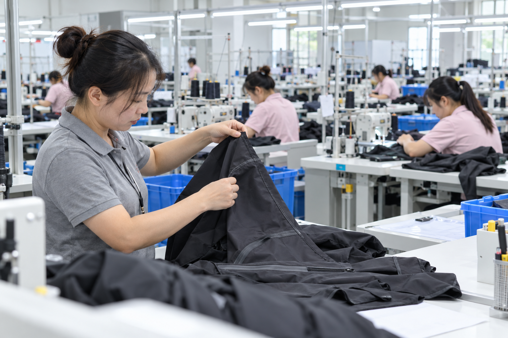
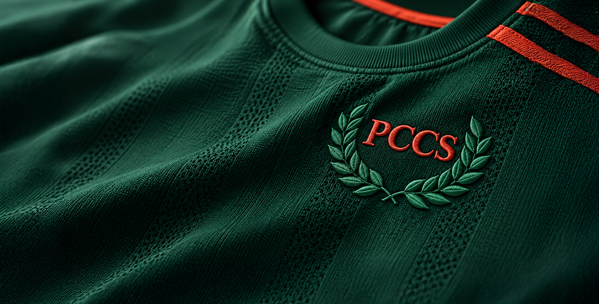

Our Work
The name behind the names. Football, sport, lifestyle — fifty years of making what others claim.
See our work →
A sketch is the easy part. The work is everything that turns it into a million finished, branded, technically-real garments — the fabric, the fit, the mark that survives fifty washes. PCCS owns more and more of that chain. 你的概念，是一切的起点。真正的挑战，在于把它转化为百万件成品：有品牌、有技术、能承受五十次洗涤。面料、版型、标识，缺一不可。这条链，PCCS 自有的环节正越来越精。
Eight steps. Every one matters. We engineer the ones that carry the value. 八个环节，每一步都决定成败。我们精通其中最关键的部分。
The bridge between the drawing and the line. 好点子，只有变成可量产的技术方案，才算真正的好产品。
You bring a brief, a sketch, a reference. We turn it into a technical package a factory can build and samples you can approve.
你带来一份需求、一张草图、一个参考。我们将它转化为工厂可直接投产的技术流程，以及供你审定的实物样品——从图纸到生产线之间的每一步，由我们衔接落实。

We develop it to your spec and handle the mill side for you. 性能，始于纱线。你不必选厂、验厂，交由我们。
Stretch, wicking, weight, durability — every property is decided in the fabric, before a panel is cut. You don’t source a mill. We do.
弹力、吸湿、克重、耐用——每项性能都在面料中定型，早于第一片衣片的裁剪。我们按你的规格开发面料，并全程对接工厂。选厂、验厂之事，你不必太费心，交由我们。

That’s why PCCS controls more of it. Every link we own is one less risk for your brand.
这正是 PCCS 不断扩大自主掌控环节的原因——我们多掌控一个环节，你的品牌就少承担一份风险。
Without cracking, lifting, or losing its edge. 不开裂、不翘边、不脱色。这是工程，而非装饰。
That’s engineering, not decoration. We make marks that hold — the same capability the world’s biggest brands buy from us directly.
一枚标识，最见真章。我们制作的标识，历久如新——这份能力，正是全球顶级品牌直接向我们采购的原因。

Fifty years on the floor. Every garment counts. 产量越大，越要件件精准。
We check inline, during production, and before shipment. China for China, Cambodia and Vietnam for the West.
质量并非最后一道检验，而是从裁剪起就融入每一道工序。我们于产线在线检验、生产途中抽检、出货之前终检。中国产能供应中国市场，柬埔寨与越南则面向西方市场。

Finish, pack to spec, export and deliver — tracked. The last mile handled.
后整理、按规格包装、出口报关与配送，全程可追踪。最后一公里，由我们全程掌控。
The name behind the names. Football, sport, lifestyle — fifty years of making what others claim.
See our work →
Made responsibly, measured honestly. Reporting to Bursa standard since FY2018.
Our commitments →Come engineer what the world wears. Whatever your role, every decision you make is engineering.
See open roles →